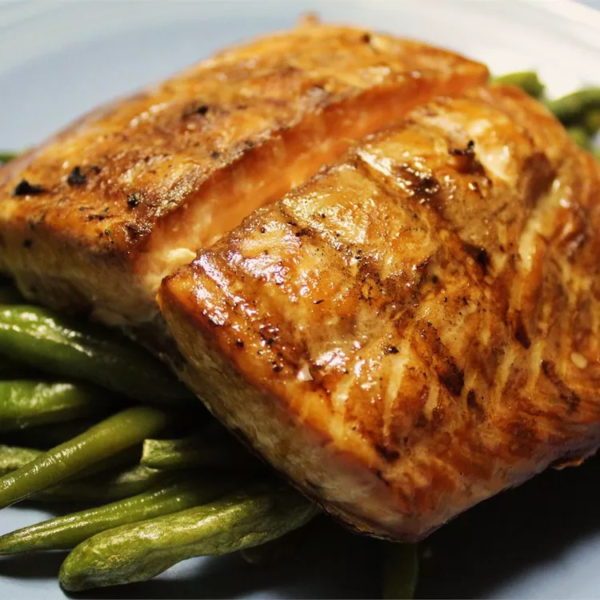

Grilled Salmon

Grilling the perfect salmon is probably
easier than you think
Intimidated by the thought of grilling
salmon at home? You really shouldn't be!
It's actually quite simple (with the right
recipe, of course). This top-rated grilled
salmon recipe will quickly become a staple
in your summertime dinner rotation.
Ingredients:
- 1 ½ pounds salmon fillets
- lemon pepper to taste
- garlic powder to taste
- salt to taste
- ⅓ cup soy sauce
- ⅓ cup brown sugar
- ⅓ cup water
- ¼ cup vegetable oil
Steps:
- Season salmon fillets with lemon pepper,
garlic powder, and salt.
- In a small bowl, stir together soy
sauce, brown sugar, water, and
vegetable oil until sugar is
dissolved. Place fish in a large
resealable plastic bag with the soy
sauce mixture, seal, and turn to
coat. Refrigerate for at least 2
hours.
- Preheat grill for medium heat.
- Lightly oil grill grate. Place salmon
on the preheated grill, and discard marinade.
Cook salmon for 6 to 8 minutes per side,
or until the fish flakes easily with a fork.
Return to main page